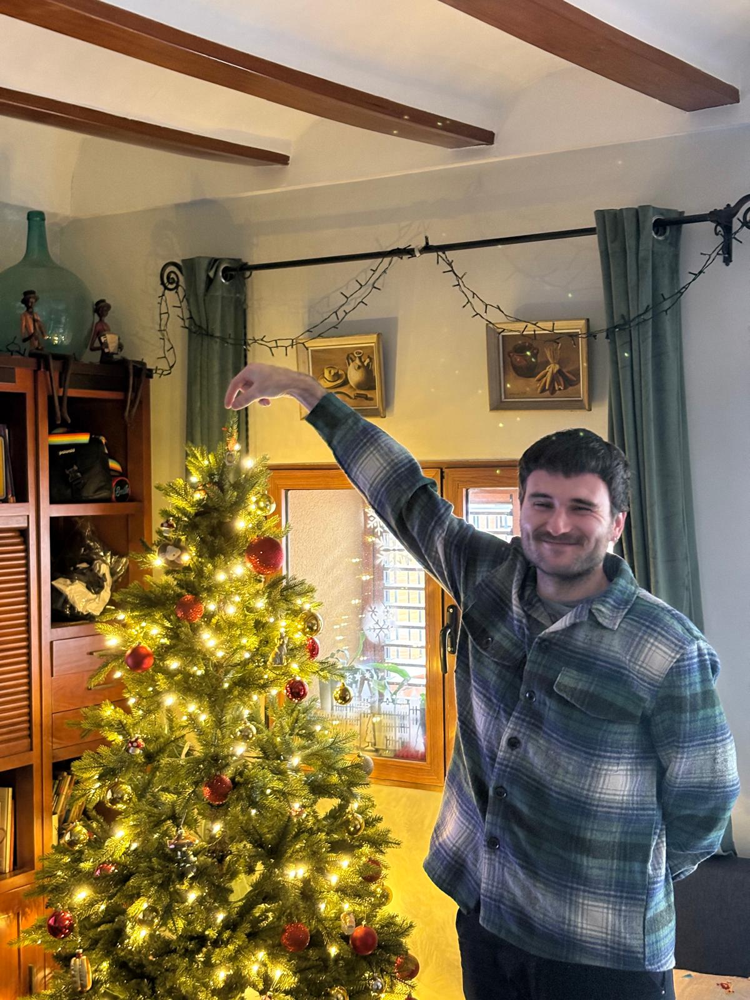

Sobre mí

Hola!!
Soy Vicent, estudiante de Desarrollo de Aplicaciones Multiplataforma y actualmente me estoy formando en el ámbito de la programación y el desarrollo de software. Me interesa especialmente seguir aprendiendo nuevas tecnologías y mejorar mis habilidades poco a poco a través de la práctica.
Además, anteriormente he trabajado en el ámbito creativo como animador 3D, lo que me ha permitido desarrollar una visión más amplia y creativa en los proyectos que realizo. Si quieres ver algunos trabajos de esta etapa, puedes visitar mi portfolio. Ver portfolio 3D